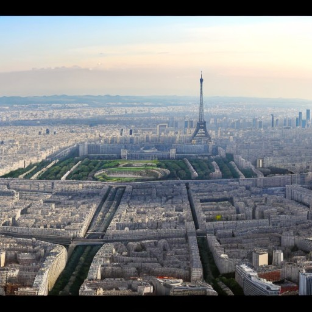

Monumentos de Paris
Os monumentos de Paris são verdadeiras joias que enriquecem a paisagem urbana da Cidade Luz. Cada um desses ícones culturais e arquitetônicos conta sua própria história e desempenha um papel fundamental na identidade de Paris. De majestosas estruturas como a Torre Eiffel, que se ergue acima da cidade com sua imponência de ferro forjado, à venerável Catedral de Notre-Dame, com sua arquitetura gótica deslumbrante, e o histórico Arco do Triunfo, que celebra as conquistas da França, esses monumentos encantam visitantes do mundo inteiro com sua beleza, significado e importância cultural. Nesta jornada pelos monumentos de Paris, exploraremos o que torna cada um deles tão especial e fascinante.
